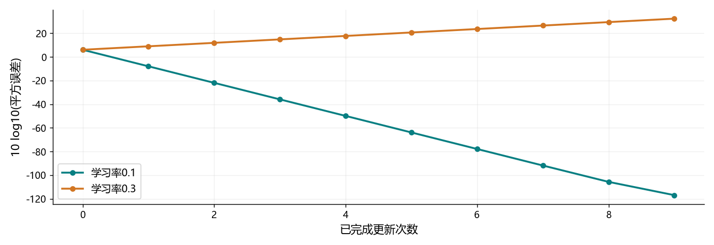

看图理解 · 跟着推演 · 对照真实结果
第12课 · 神经网络到底怎样学会一个参数
从可手算的一个参数出发，实际比较学习率，再连接到音频掩码、张量和训练验证。
点播放开始；点右侧小节可跳到不懂的部分。进度保存在当前浏览器。
先看视频，再动手
不必先读完正文。跟着视频暂停预测，看到运行图时解释横轴、纵轴和曲线，再做下面的自测。完整图文保留作查阅；视频讲清本课核心算例，不把看完等同于掌握全部专题。
先修：Python循环、数组与STFT；微积分从一个标量例子开始
- 推导并核验一次梯度更新
- 解释学习率过大为什么会越改越错
- 读懂音频网络的形状、有效损失和集合职责
跟着运行：注释代码、实际输出与结果图
下面代码在生成本站时实际执行。这里只是教学小实验，不是完整模型训练或业务设备测评。
import numpy as np
steps = np.arange(10)
curves = []
for lr in [0.1, 0.3]:
w = 0.5; losses = [] # 同一起点，只改变学习率
for _ in steps:
prediction = w*2.0
losses.append((prediction-3.0)**2)
grad = 2*(prediction-3.0)*2.0 # 链式法则的两项
w -= lr*grad # 沿负梯度方向移动
curves.append(np.array(losses))
# 对数仅用于绘图，训练优化的仍是原平方误差
stable_db = 10*np.log10(curves[0]+1e-12)
large_db = 10*np.log10(curves[1]+1e-12)
print('初始损失:', curves[0][0])
print('一步后lr=0.1:', round(curves[0][1], 4))
print('一步后lr=0.3:', round(curves[1][1], 4))
本次实际输出
初始损失: 4.0 一步后lr=0.1: 0.16 一步后lr=0.3: 7.84

闭卷自测：x=2、目标3、w=0.5，平方损失，学习率1；一步后损失是多少？
梯度−8，新w=8.5，预测17，损失(17−3)²=196。方向正确不能保证任意大步长稳定。
逐字讲稿 · 可定位回看
不要一开始把神经网络想成神秘的大脑。先只有一个旋钮，参数叫 w，计算器把输入乘这个旋钮。输入二，参数零点五，输出是一；我们希望它输出三，因此当前预测差了二。
目标三是这条训练样本提供的答案，不是网络自动发现的。模型、数据和目标共同决定它会学什么。如果目标与音频没对齐，再强的优化器也可能非常努力地学习错误关系。
今天的最小实验只训练一个标量，不运行完整音频网络。你先亲手理解前向、损失、梯度和更新四步，之后再把一只旋钮扩展成许多参数，复杂网络的基本逻辑仍然相同。
预测一减目标三，误差为负二，平方后损失为四。平方让正负错误都产生非负代价，也让大错误受到更重惩罚。它方便推导，但不是所有音频任务都只能使用这一种损失。
如果参数从零点五增大一点，预测会更靠近三，损失会减少；如果减小，损失反而增加。这个局部变化趋势就是我们希望用梯度描述的东西，不需要靠随机尝试每一个参数值。
注意训练损失与业务指标不一定相同。频谱均方误差下降，不保证每个辅音更清楚；分离损失改善，也不直接给出文字识别率。我们先把优化目标说清，再讨论怎样独立评测。
第一段变化是参数对预测的影响：预测等于参数乘输入，因此参数增加一点，预测增加输入那么多，这里是二。第二段变化是预测对平方损失的影响，等于二乘预测与目标之差。
当前预测一、目标三，第二段是负四。把负四乘第一段的二，得到参数梯度负八。这个负号说明在当前位置稍微增大参数会降低损失，不要把负梯度方向又说成减小参数。
PyTorch 的 backward 按计算图自动完成这种链式求导。它不是偷偷找到正确答案，而是把你写出的计算关系求导。手算这个小例子，是检查自动求导和误差定义有没有理解反的重要方法。
学习率取零点一，更新等于旧参数减去学习率乘梯度。因为梯度负八，所以这里实际增加零点八，新参数为一点三。新预测是二点六，与目标三相差负零点四，平方损失为零点一六。
我们没有一步到最优参数一点五，但已经接近很多。这个例子特意简单，所以改善非常明显；复杂网络多参数、多样本训练时，不能保证每一批更新都让验证分数单调提升。
如果学习率过大，就可能跨过谷底到更远的另一边。负梯度只是局部下降方向，不能推出沿它走任意远都更好。接下来只改变学习率，实际把这件事画出来。
代码分别运行零点一和零点三两个学习率，每次都把参数重置为零点五。若第二次继承第一次的参数，实验就不再是相同起点的公平比较。更新次数也固定为十次。
循环先计算预测，再记录更新前损失，接着按手算公式计算梯度，最后更新参数。横轴为零的点代表还没有更新时的损失，横轴为一才是更新一次后的结果。
最后把平方误差转成十倍对数方便同时展示很大和很小的数值。这只是绘图变换，优化时仍使用原平方损失，不是把目标函数换成了对数损失。小正数避免零值取对数。
两条曲线从相同位置出发。学习率零点一的损失持续下降，一步以后原损失为零点一六；零点三那条一步以后为七点八四，比初始四还大，随后继续增大。
纵轴是损失的对数表达，不是识别准确率，也不是语音信噪比。曲线在零以下意味着原损失小于一，不意味着出现负的平方误差。读图前先确认坐标轴定义。
这是真实执行这段标量代码得到的结果，证明步长会影响优化稳定性。它不能证明真实音频模型也应该使用零点一；网络、优化器和损失尺度变了，合适学习率也会变。
音频增强中，可以让网络为每个时间帧、每个频率位置预测一个增益掩码。输入复数频谱叫 Y，掩码叫 M，相乘得到估计频谱。它不是把整段录音统一开关，而是很多格点分别调节。
如果带噪幅度八、目标幅度二，幅度比是零点二五。预测零点五时，掩码误差平方为零点零六二五，而重建幅度误差平方为四。两个损失数值不同，因为对格点的权重含义不同。
把掩码限制在零到一很方便，但不能放大。真实混合可能相位抵消，使干净幅度大于带噪幅度，因此理想幅度比不一定小于一。只改幅度保留带噪相位，也有表达能力限制。
假设四千零九十六点波形，FFT 一百二十八点，帧移六十四，而且不做居中填充。单边频率格点是六十五，时间帧数是一加四千零九十六减一百二十八再除六十四，等于六十三。
一个批次可以写成 B、一个特征通道、六十五频点、六十三帧。B 是几条样本，不是麦克风声道。中间卷积变成四个特征通道，也不是突然分离出四个人在说话。
时间卷积只在左边补历史，能够避免读取未来帧；频率上下填充不是未来音频。但当前分析窗仍要收齐采样，所以网络帧级因果不等于整套系统零延迟。
两条录音有效长度三帧和一帧，每帧三个频率点，补齐到四帧后，共有二十四个存储位置，但只有十二个有效元素。损失分母应按有效元素计数，不要把补零当成真实标签。
通常每批先清梯度，再前向、求损失、反向、更新。梯度默认累加，只有明确设计梯度累积时才保留。训练模式与评估模式控制某些层行为，关闭求导则控制是否记录计算图，两者不互相替代。
训练集负责学习，验证集负责选超参数和检查点，测试集留作最终评估。先按说话人或会话划分再切片，避免同一录音相邻片段跨集合。曲线好得异常时，先查泄漏，不急着写简历。
暂停计算：初始仍是零点五，输入二、目标三，但学习率换成一。新参数为八点五，预测十七，损失一百九十六。你应该能够不用代码得出结果，再用代码核对。
真正搭音频训练时，先拿十条固定样本检查能否把训练误差降得很低。这不是最终能力证明，只是验证标签、损失和更新链路接通。连这一步都失败，就先排错，不必立刻下载更多数据。
今天留下梯度手算、两种学习率的运行图和完整shape表。下一步按原课读 PyTorch 模型与训练脚本，再解释有效掩码和因果测试。能闭卷说明一个批次怎样变成参数更新，才算跨过这一课的核心门槛。
适用边界与参考正文
本视频执行NumPy标量梯度实验，不宣称重新训练音频神经网络。PyTorch张量、掩码网络和完整训练代码保留在原课。
图、公式、代码结果均由本站制作；旁白是本地中文语音合成，不是教师真人录音，也不是 NotebookLM 生成。没有向 Google 上传项目材料。